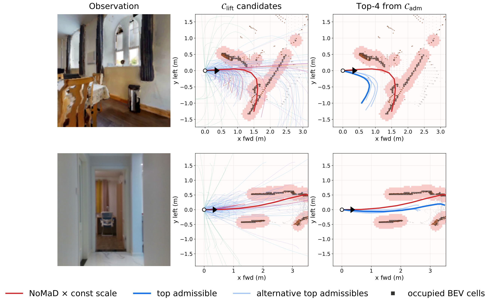

Overview
Generalist visual-navigation policies tell a robot which direction to go, but not how far. Their normalized trajectories capture useful path shape, yet a controller needs a metric trajectory. Existing scalar lifters apply one scale to every waypoint, while depth added inside a policy ties the geometric pathway to that policy and can inherit monocular-depth errors near obstacles.
PathLift is a per-waypoint depth-conditioned adapter for pretrained visual-navigation policies. It combines a canonicalized policy path with an explicit sensor-grade depth source, then predicts a metric body-frame path by adjusting each waypoint's magnitude and lateral position. A shared camera-frame interface accepts RGB-D, stereo, or projected LiDAR depth. At deployment, one feed-forward pass produces a depth-feasible path without test-time optimization.

Method
PathLift represents each output waypoint as a scaled prior waypoint plus a lateral residual. During training, the target is selected from a family of 679 intent-preserving candidate lifts: the depth-feasible candidate closest to the expert path is used as supervision. Feasibility checks enforce clearance, zero obstacle penetration, sufficient depth-observed coverage, and a bounded deviation from the prior.
The candidate family is used to construct training targets only. At inference, a 4.3M-parameter adapter consumes the canonicalized prior and reprojected depth and directly predicts the lifted trajectory.


Results
We evaluate PathLift in closed-loop simulation on 50 unseen HM3D scenes (2,000 trials per row) and on a real wheeled robot. One adapter checkpoint is evaluated across regression-based and generative navigation priors.
Simulation · HM3D
| Visual prior | Prior only SR (%) | With PathLift SR (%) | Relative SR gain | Adapter time |
|---|---|---|---|---|
| GNM | 17.40 | 25.60 | +47.1% | 5.3 ms |
| ViNT | 25.00 | 33.70 | +34.8% | 5.2 ms |
| NoMaD | 17.45 | 29.80 | +70.8% | 5.3 ms |
| FlowNav | 16.00 | 28.45 | +77.8% | 5.3 ms |
Success rate and adapter overhead from the closed-loop benchmark. Adapter timing is measured on an NVIDIA RTX 4090.
Real robot · Image-goal navigation
Across three indoor corridors, stereo-depth PathLift improves success for every evaluated prior. Its mean success is 86.7%, compared with 48.9% for the fixed-scale baselines. Projected LiDAR provides comparable results, with 80.0% aggregated success across the evaluated trials.
| Prior | Fixed-scale SR | PathLift + stereo SR |
|---|---|---|
| GNM | 46.67% | 86.67% |
| ViNT | 66.67% | 93.33% |
| NoMaD | 33.33% | 80.00% |
15 trials per method. The same PathLift weights are used across priors and depth sources.
Real robot · Goal-free exploration
In 10 no-goal trials, PathLift extends NoMaD's mean distance before first collision from 7.86 m to 11.67 m (+48%). The maximum distance increases from 13.38 m to 22.50 m.
Composing with local planners
PathLift supplies a metric goal for a downstream local planner. On an 800-trial HM3D subset, PathLift followed by MPPI reaches 38.00% success and 34.57% SPL, improving on MPPI alone (34.12% success, 29.11% SPL).
| Method | SR (%) | SPL (%) | Stage time |
|---|---|---|---|
| PathLift | 29.62 | 28.20 | 5.6 ms |
| MPPI | 34.12 | 29.11 | 21.3 ms |
| PathLift → MPPI | 38.00 | 34.57 | 26.9 ms |
Ablations · NoMaD prior
The ablations show that depth input and admissible-family supervision are central to performance. Per-waypoint corrections add 2.0 percentage points over the retrained scalar-head variant.
| Variant | Success rate (%) |
|---|---|
| PathLift | 29.62 |
| Single per-trajectory scalar | 27.62 |
| No depth input | 6.50 |
| CNN depth encoder | 14.25 |
| Direct expert-path supervision | 14.88 |
| Fixed-scale NoMaD | 19.88 |
800-trial HM3D subset. Each ablation removes or changes one component of the default configuration.
Reference
PathLift was accepted to the 10th Conference on Robot Learning (CoRL 2026), Austin, Texas, USA.
Gwanjun Shin, Hyeongseok Suh, Hongmo Jung, and Jongwoo Lim. PathLift: Depth-Conditioned Metric Lifting for Visual-Navigation Priors. In Proceedings of the 10th Conference on Robot Learning (CoRL), 2026.